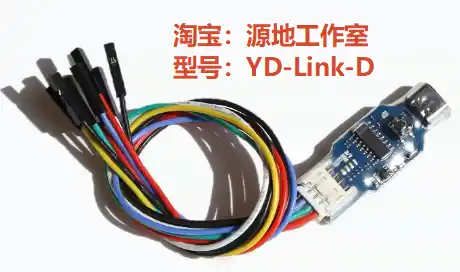

调试器 WCH-Link
官方资料
用户手册：WCH-LinkUserManual.PDF - 南京沁恒微电子股份有限公司
上一个资料中打包了用户手册，避免有新的版本，最好都下载看一下
调试器固件: WCH-LinkUtility.ZIP - 南京沁恒微电子股份有限公司
WCH-Link 的固件和用户手册被打包在此资料中
固件更新工具: WCHISPTool_Setup.exe - 南京沁恒微电子股份有限公司
注意: 下载的安装程序名为 WCHISPTool_Setup，安装后软件名为 WCHISPStudio
WCH-Link 系列
Link 功能和性能对比表
（摘自《WCH-Link 使用说明 V2.7》）
| 功能项 | WCH-Link-R1-1v1 | WCH-LinkE-R0-1v3 | WCH-DAPLink-R0-2v0 | WCH-LinkW-R0-1v1 |
|---|---|---|---|---|
| 使用的芯片 | CH549G | CH32V305F | CH32V203G8R | CH32V208G |
| RISC-V 模式 | ✔ | ✔ | ✔ | |
| ARM-SWD 模式-HID 设备 | ✔ | |||
| ARM-SWD 模式-WINUSB 设备 | ✔ | ✔ | ✔ | ✔ |
| ARM-JTAG 模式-HID 设备 | ✔ | |||
| ARM-JTAG 模式-WINUSB 设备 | ✔ | ✔ | ✔ | |
| ModeS 键切换模式 | ✔ | ✔ | ✔ | |
| 两线方式离线升级固件 | ✔ | |||
| 串口离线升级固件 | ✔ | |||
| USB 离线升级固件 | ✔ | ✔ | ✔ | |
| 3.3V/5V 电源输出可控 | ✔ | ✔ | ✔ | |
| 高速 USB2.0 转 JTAG 接口 | ✔ | |||
| 无线模式 | ✔ | |||
| 下载工具 | MounRiver Studio, WCH-LinkUtility, Keil uVision5 | MounRiver Studio, WCH-LinkUtility, Keil uVision5 | WCH-LinkUtility, Keil uVision5 | MounRiver Studio, WCH-LinkUtility, Keil uVision5 |
| Keil 支持版本 | Keil V5.25 及以上 | Keil V5.25 及以上 | 所有版本 Keil 都支持 | Keil V5.25 及以上 |
WCH-Link 串口支持波特率
（摘自《WCH-Link 使用说明 V2.7》）
| 1200 | 2400 | 4800 | 9600 | 14400 |
| 19200 | 38400 | 57600 | 115200 | 230400 |
WCH-LinkE / DAPLink / LinkW 串口支持波特率
（摘自《WCH-Link 使用说明 V2.7》）
| 1200 | 2400 | 4800 | 9600 | 14400 |
| 19200 | 38400 | 57600 | 115200 | 230400 |
| 460800 | 921600 |
WCH-Link-R1-1v1
官方出品
待收录
第三方复刻 YD-Link-D

固件更新
-
获取固件
-
下载 官方资料 中的 “调试器固件 WCH-LinkUtility.ZIP”，解压；
-
如果想让调试器连接 ARM 单片机（烧录成 CMSIS-DAP），使用目录
Firmware_Link中的WCH-Link_APP_IAP_ARM.bin;如果想让调试器连接沁恒的 RSIC-V 单片机，使用目录
Firmware_Link中的WCH-Link_APP_IAP_RV.bin
-
-
安装烧录工具
- 下载 官方资料 中的 “固件更新工具 WCHISPTool_Setup”，安装后得到软件 WCHISPStudio
-
调试进入固件烧录状态
- 调试器不上电，按住调试器上的 ISP 按钮（其实就是BOOT），再使用 USB 线把调试器接入电脑
-
烧录工具配置
- 打开 WCHISPStudio
- “芯片” 选择 CH54x
- “芯片信号” 选择 CH549
- “下载接口” 选择 USB
- “设备列表” 搜索，找到刚刚接入的调试器
- “下载文件 - 目标程序文件1” 定位到步骤 “1.获取固件” 中的固件文件
- “下载配置” 选中清空 CodeFlash
-
烧录
- 点击下载，等待烧录完成
- 拔插 USB 重新接入电脑，查看设备管理器是否识别成功
- 如果烧录 ARM 模式，则调试器上的 A/R 指示灯会点亮